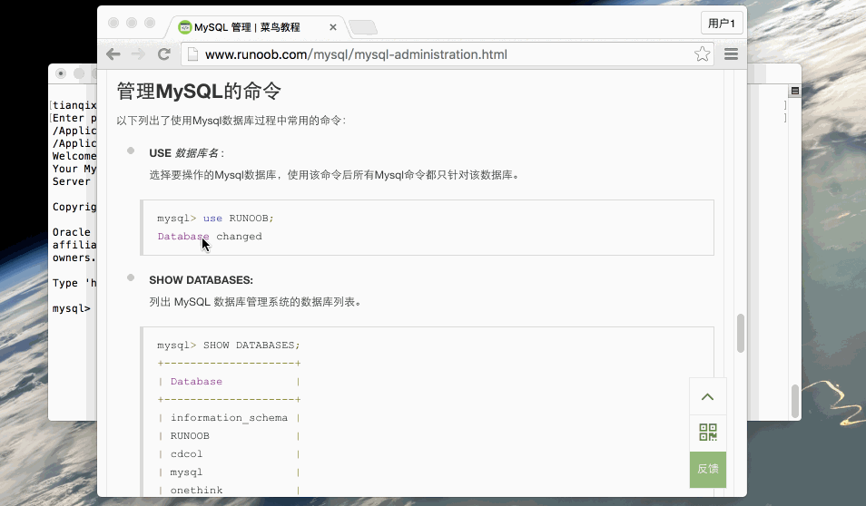

MySQL Administration
Start and stop MySQL server
On Windows system
Start MySQL server:
1、Through the "Services" management tool:Open the Run dialog (Win + R), enterservices.msc, find the "MySQL" service, right-click and select "Start".
2. Via Command Prompt:Open Command Prompt (as administrator), enter the following command:
net start mysql
Stop MySQL server:
1、Through the "Services" management tool:Similarly open the Run dialog, enter services.msc, find the "MySQL" service, right-click and select "Stop".
2、Via Command Prompt:Open Command Prompt (as administrator), enter the following command:
net stop mysql
On Linux system
1. Start MySQL service:
Usesystemdcommand (applicable to most modern Linux distributions, such as Ubuntu, CentOS, etc.):
sudo systemctl start mysql
Useservicecommand (in some older distributions):
sudo service mysql start
2. Stop MySQL service:
Using systemd:
sudo systemctl stop mysql
Using the service command:
sudo service mysql stop
3. Restart MySQL service:
Using systemd:sudo systemctl restart mysql
Using the service command:
sudo service mysql restart
4. Check MySQL service status:
Using systemd command:
sudo systemctl status mysql
Using the service command:
sudo service mysql status
Mac OS system
Start MySQL service:
Using the command line:
sudo /usr/local/mysql/support-files/mysql.server start
Stop MySQL service:
Using the command line:
sudo /usr/local/mysql/support-files/mysql.server stop
Restart MySQL service:
Using the command line:
sudo /usr/local/mysql/support-files/mysql.server restart
Check MySQL service status:
Using the command line:
sudo /usr/local/mysql/support-files/mysql.server status
In the above commands, mysql may vary due to different installation paths or versions.
On Mac OS, the installation path of MySQL is usually /usr/local/mysql/, so you need to use the mysql.server script in this path to start and stop the MySQL service.
MySQL user settings
In MySQL, user settings include operations such as creating users, setting privileges, and managing users. The following are some common MySQL user settings operations, including creating users, setting privileges, viewing and deleting users, etc.
Create user
To create a new user, you can use the following SQL command:
CREATE USER 'username'@'host' IDENTIFIED BY 'password';
username: username.host: specifies which hosts the user can connect from. For example,localhostallows local connections only,%allows connections from any host.password: the user's password.
Example
Grant privileges
After creating a user, you need to grant them access privileges. UseGRANTcommand to grant privileges:
GRANT privileges ON database_name.* TO 'username'@'host';
privileges: required privileges, such asALL PRIVILEGES、SELECT、INSERT、UPDATE、DELETEetc.database_name.*: indicates granting privileges on a database or table.database_name.*means granting privileges on all tables in the entire database,database_name.table_namemeans granting privileges on the specified table.TO 'username'@'host': specifies the user and host to whom privileges are granted.
Example
Flush privileges
After granting or revoking privileges, you need to flush privileges to make the changes take effect:
FLUSH PRIVILEGES;
View user privileges
To view the privileges of a specific user, you can use the following command:
SHOW GRANTS FOR 'username'@'host';
Example
Revoke privileges
To revoke a user's privileges, use the REVOKE command:
REVOKE privileges ON database_name.* FROM 'username'@'host';
Example
Delete user
To delete a user, you can use the following command:
DROP USER 'username'@'host';
Example
Change user password
To change a user's password, you can use the ALTER USER command:
ALTER USER 'username'@'host' IDENTIFIED BY 'new_password';
Example
Change user host
To change the user's host (i.e., which hosts are allowed to connect), you can first delete the user and then recreate a new user.
Example
DROP USER 'john'@'localhost';
-- Recreate user and specify new host
CREATE USER 'john'@'%' IDENTIFIED BY 'password123';
Specify privileges when creating user
When creating a user, you can also grant privileges at the same time (MySQL 8.0.16 and higher):
Example
GRANT ALL PRIVILEGES ON test_db.* TO 'john'@'localhost';
/etc/my.cnf file configuration
The /etc/my.cnf file is the MySQL configuration file used to configure various parameters and options of the MySQL server.
In general, you do not need to modify this configuration file. The default configuration of this file is as follows:
[mysqld] datadir=/var/lib/mysql socket=/var/lib/mysql/mysql.sock [mysql.server] user=mysql basedir=/var/lib [safe_mysqld] err-log=/var/log/mysqld.log pid-file=/var/run/mysqld/mysqld.pid
In the configuration file, you can specify the directory for storing different error log files. Generally, you do not need to change these configurations.
The /etc/my.cnf file may vary across different systems and MySQL versions, but generally includes the following sections:
1. Basic settings
basedir: The basic installation directory of the MySQL server.datadir: The location where MySQL data files are stored.socket: The Unix socket file path of the MySQL server.pid-file: The file path that stores the process ID of the currently running MySQL server.port: The port number that the MySQL server listens on, default is 3306.
2. Server options
bind-address: Specifies the IP address that the MySQL server listens on; can be an IP address or hostname.server-id: In replication configuration, set a unique identifier for each MySQL server.default-storage-engine: The default storage engine, e.g., InnoDB or MyISAM.max_connections: The maximum number of connections the server can maintain simultaneously.thread_cache_size: The size of the thread cache, used to improve the startup speed of new connections.query_cache_size: The size of the query cache, used to improve the efficiency of identical queries.default-character-set: The default character set.collation-server: The server's default collation.
3. Performance tuning
innodb_buffer_pool_size: The buffer pool size of the InnoDB storage engine; this is one of the most important parameters in InnoDB performance tuning.key_buffer_size: The key buffer size of the MyISAM storage engine.table_open_cache: The number of table caches that can be opened simultaneously.thread_concurrency: The number of threads allowed to run simultaneously.
4. Security settings
skip-networking: Disables the MySQL server from listening on network connections, allowing only local connections.skip-grant-tables: Starts the MySQL server without requiring a password, usually used to recover a forgotten root password, but this is a security risk.auth_native_password=1: Enables native password authentication for MySQL 5.7 and above.
5. Log settings
log_error: The path to the error log file.general_log: Logs all client connections and queries.slow_query_log: Logs slow queries whose execution time exceeds a specific threshold.log_queries_not_using_indexes: Logs queries that do not use indexes.
6. Replication settings
master_host和master_user: The address of the master server and the replication user.master_password: The password of the replication user.master_log_file和master_log_pos: The log file and position used for replication.
Commands for managing MySQL
Below are commonly used commands when operating a MySQL database.
USE Database name :
Select the MySQL database to operate on. After using this command, all MySQL commands will only target that database.mysql> use RUNOOB; Database changed
SHOW DATABASES:
List the databases in the MySQL database management system.mysql> SHOW DATABASES; +--------------------+ | Database | +--------------------+ | information_schema | | RUNOOB | | cdcol | | mysql | | onethink | | performance_schema | | phpmyadmin | | test | | wecenter | | wordpress | +--------------------+ 10 rows in set (0.02 sec)
SHOW TABLES:
Display all tables in the specified database. Before using this command, you need to use the use command to select the database to operate on.mysql> use RUNOOB; Database changed mysql> SHOW TABLES; +------------------+ | Tables_in_runoob | +------------------+ | employee_tbl | | runoob_tbl | | tcount_tbl | +------------------+ 3 rows in set (0.00 sec)
SHOW COLUMNS FROM Data table:
Display the attributes, attribute types, primary key information, whether it is NULL, default values, and other information of the data table.mysql> SHOW COLUMNS FROM runoob_tbl; +-----------------+--------------+------+-----+---------+-------+ | Field | Type | Null | Key | Default | Extra | +-----------------+--------------+------+-----+---------+-------+ | runoob_id | int(11) | NO | PRI | NULL | | | runoob_title | varchar(255) | YES | | NULL | | | runoob_author | varchar(255) | YES | | NULL | | | submission_date | date | YES | | NULL | | +-----------------+--------------+------+-----+---------+-------+ 4 rows in set (0.01 sec)
SHOW INDEX FROM Data table:
Display detailed index information of the data table, including PRIMARY KEY.mysql> SHOW INDEX FROM runoob_tbl; +------------+------------+----------+--------------+-------------+-----------+-------------+----------+--------+------+------------+---------+---------------+ | Table | Non_unique | Key_name | Seq_in_index | Column_name | Collation | Cardinality | Sub_part | Packed | Null | Index_type | Comment | Index_comment | +------------+------------+----------+--------------+-------------+-----------+-------------+----------+--------+------+------------+---------+---------------+ | runoob_tbl | 0 | PRIMARY | 1 | runoob_id | A | 2 | NULL | NULL | | BTREE | | | +------------+------------+----------+--------------+-------------+-----------+-------------+----------+--------+------+------------+---------+---------------+ 1 row in set (0.00 sec)
SHOW TABLE STATUS [FROM db_name] [LIKE 'pattern'] \G:
This command will output performance and statistics information of the MySQL database management system.mysql> SHOW TABLE STATUS FROM RUNOOB; # 显示数据库 RUNOOB 中所有表的信息 mysql> SHOW TABLE STATUS from RUNOOB LIKE 'runoob%'; # 表名以runoob开头的表的信息 mysql> SHOW TABLE STATUS from RUNOOB LIKE 'runoob%'\G; # 加上 \G，查询结果按列打印
Gif demonstration:

Other extensions
oocarain
ooc***in@163.com
Record problems encountered during MySQL learning.
System: 32-bit Windows
MySQL version: 5.7.17-log
MySQL syntax is case-insensitive, but uppercase is easier to see.
1. Start/stop MySQL service
1 [Start Menu] Search services.msc to open Windows [Service Manager]. You can start/stop the MySQL service here.
2 Use the command in cmd:
Encountering net command not recognized, as follows:
This is because the environment variable is not configured. Which file's environment variable is not configured?
It is net.exe under C:\windows\system32\ that has not been configured with environment variables.
Now switch to this path and try whether the net command can be used:
In Powershell, you need to use
.\net stop mysql
Stop service.
In cmd, you can directly use
Start service.
After adding c:\windows\system32 to the system's Path:
Success!!!
oocarain
ooc***in@163.com
A fish
ili***yun@163.com
Reference address
When using insert to add a user, an error may be reported:
There is a statement in my-default.ini:
Strict mode is specified. For safety, strict mode prohibits directly modifying the user table in the mysql database through insert to add new users.
sql_mode=NO_ENGINE_SUBSTITUTION,STRICT_TRANS_TABLES
After deleting STRICT_TRANS_TABLES, you can use insert to add.
A fish
ili***yun@163.com
Reference address
Morrison
982***639@qq.com
Reference address
Recommend GRANT command for adding new users
1. Grant ordinary data users the rights to query, insert, update, and delete all table data in the database.
Or, use a single MySQL command to replace:
2. Grant database developers permissions such as creating tables, indexes, views, stored procedures, functions, etc.
Grant permissions to create, modify, and delete MySQL table structures.
Grant permissions to operate MySQL foreign keys.
Grant permissions to operate MySQL temporary tables.
Grant permissions to operate MySQL indexes.
Grant permissions to operate MySQL views and view the view source code.
Grant permissions to operate MySQL stored procedures and functions.
3. Grant ordinary DBA permissions to manage a certain MySQL database.
Among them, the keywordprivilegescan be omitted.
4. Grant senior DBA permissions to manage all databases in MySQL.
5. MySQL grant permissions can act on multiple levels respectively.
1. Grant acts on the entire MySQL server:
2. Grant acts on a single database:
3. Grant acts on a single table:
Here, when granting a user multiple tables, you can execute the above statements multiple times. For example:
4. Grant acts on columns in a table:
5. Grant acts on stored procedures and functions:
6. View MySQL user permissions
View current user (self) permissions:
View other MySQL user permissions:
7. Revoke permissions that have been granted to MySQL users.
revoke syntax is similar to grant, just change the keyword "to" to "from":
8. Notes on MySQL grant and revoke user permissions
1. After granting or revoking user permissions, the user must reconnect to the MySQL database for the permissions to take effect.
2. If you want the authorized user to also grant these permissions to other users, you need the option grant optionThis feature is generally not needed. In practice, database permissions should be managed uniformly by the DBA.
Note: after creation, you need to executeFLUSH PRIVILEGESstatement.
Morrison
982***639@qq.com
Reference address
halo
g51***vip.qq.com
Reference address
InnoDB storage engine
MyISAM storage engine
MEMORY storage engine
Storage engine selection
halo
g51***vip.qq.com
Reference address
TEST
791***590@qq.com
Reference address
Add user:
insert into mysql.user(Host,User,Password) values("localhost","test",password("1234"));Reports the following error: ERROR 1364 (HY000): Field 'ssl_cipher' doesn't have a default value.
Cause of the error:
Some fields in the mysql user table cannot be empty and have no default value. Actually, this is an operation error. When adding a user in MySQL, you cannot directly insert into the user table this way.
Solution:
Correct way to add a user:
User: user01, password: 123456. This adds a new user and will not produce the above error.
TEST
791***590@qq.com
Reference address
laowang
zhu***2823946@outlook.com
After MySQL 8.0.11, the method to create a user is as follows:
The method to grant account privileges is as follows:
Grant all privileges:
View user privileges:
laowang
zhu***2823946@outlook.com
Dispatch employees
619***592@qq.com
The following will appear:
Just remove the semicolon,\Gand the semicolon; have similar functions; either one can be used.
Dispatch employees
619***592@qq.com
Joseph Lin
jos***.lin@aliyun.com
I saw this content related to configuration, and it lacked a note about default encoding, so I will add it here. Configure according to personal needs; for reference only.
On Ubuntu 18.04, the default configuration file after installation using APT is:
The key configuration line to change the default to utf-8 encoding is:
Put this line under [mysqld].
Of course, I am also a beginner at MySQL databases. My current configuration file looks like this:
After modifying the configuration file /etc/mysql/my.cnf, restart mysql:
You can verify it with:
Reference address:
https://jingyan.baidu.com/article/64d05a021cd8a9de55f73be4.html
https://blog.csdn.net/qq_34694342/article/details/86703068
https://www.liaoxuefeng.com/wiki/1016959663602400/1017802264972000
Joseph Lin
jos***.lin@aliyun.com